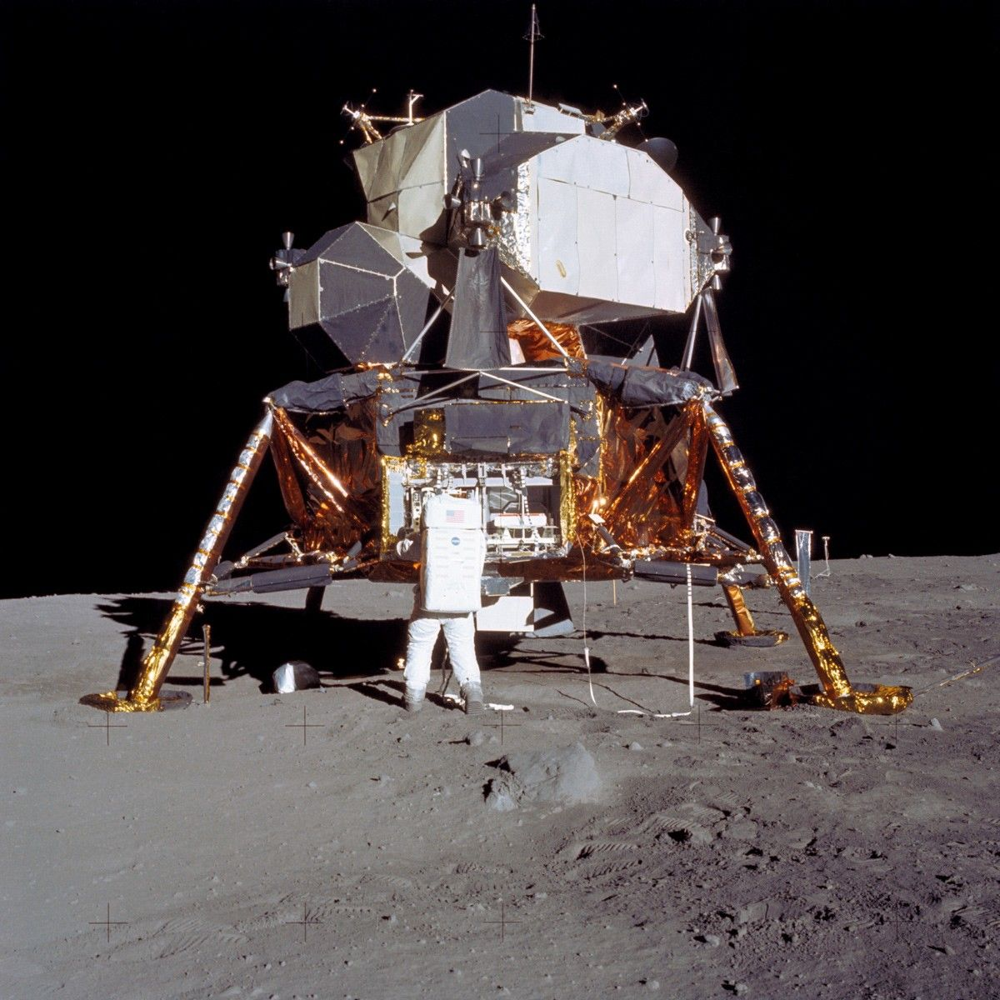

APOLLO 11 · 1969LUNAR MODULE · DESCENT STAGE
Eagle's Descent Stage
The Apollo 11 Lunar Module carried Neil Armstrong and Buzz Aldrin to the lunar surface. Its descent stage remained at Tranquility Base after the astronauts departed in the ascent stage.
LEFT ON THE MOON
NASA IMAGE & MISSION CONTEXT ↗